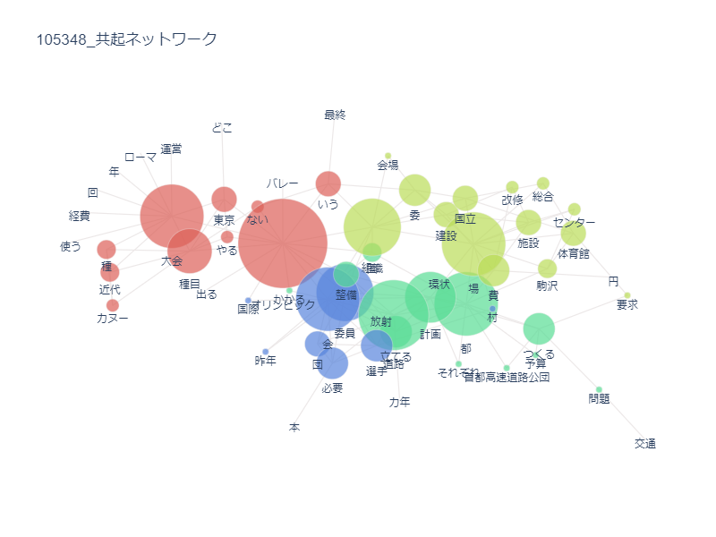

<!DOCTYPE html>
<html lang="jp">
<head>
    <link rel="stylesheet" href="./css/style.css">
    <body style="background-color:lightyellow"></body>
    <html style="background-color:lightyellow"></html> 
    
    <!-- ⑥↓タイトルを変えてみよう -->
    <title>第８回</title>
    <!-- ⑤スタイルシートの設定をしよう -->
    <link rel="stylesheet" href="./css/style.css">
    <!-- h1.htmlからある行をコピペしてくればOK -->

</head>
<body>
    
    <h1>第７回</h1>
    <!-- 塊ごとにdivタグで区切るようにしましょう。 -->
    <center><font size="6"><b><font color="tan">比較分析</font></b></font></center><br><br>
        <br>

    
         <!-- ①↓に文字を書いてみよう -->
        
<center>←1964年   2020年→</center>
<center>
        <br></center>
<center>
        <br></center>
<center>
        <br></center>

        <center><font size="4"><b><font color="tan">比較をして</font></b></font><br>
            1964年の記事は、「道路」や「計画」がたくさん使われているのに対して、2020年は「さん」が多かった。<br>
            これは、1964年は計画など大規模なことが注目されていたが、2020年のオリンピックでは、人などの個人に焦点が当てられていることを示している。<br>
            また、1964年には「オリンピック」が多く使われているが、2020年では、「五輪」に変わっている。<br>
            1964年は、外国に憧れを持っている感じがするが、年を重ねるに連れて日本らしさを感じる文章になっているのではないか。


<br>


</body>
</html>